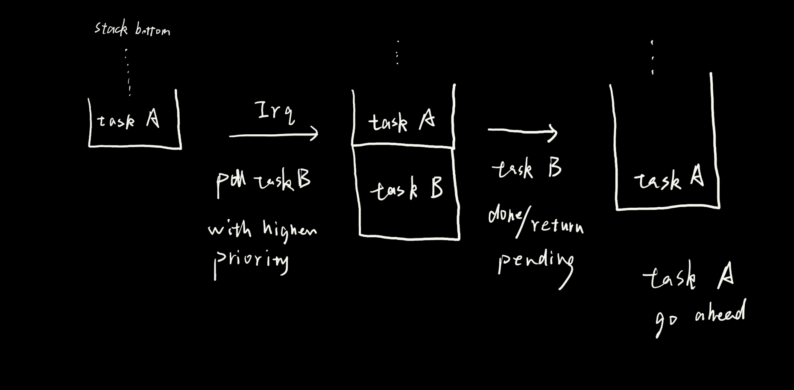

现有的Rust OS
axhal
Note
. ├── arch │ ├── aarch64 （arm相关：cortex-m-rt？） │ │ └── ... │ ├── loongarch64 │ │ └── ... │ ├── mod.rs │ ├── riscv （riscv-rt？） │ │ └── ... │ └── x86_64 │ └── ... ├── cpu.rs （core，核心相关） ├── irq.rs （中断相关） ├── lib.rs ├── mem.rs （物理内存管理） ├── paging.rs （内存分页相关） ├── platform │ └── ... (特定平台的实现) ├── time.rs ├── tls.rs (✖线程内存，应由multitask模块提供？) └── trap.rs （特权态相关）
embedded-hal
Note
main crate ├── delay.rs ├── digital.rs ├── i2c.rs ├── lib.rs ├── pwm.rs └── spi.rs non-blocking crate ├── lib.rs ├── serial.rs └── spi.rs async crate ├── delay.rs ├── digital.rs ├── i2c.rs ├── lib.rs └── spi.rs bus crate (提供bus的共享实现) ├── i2c │ ├── atomic.rs │ ├── critical_section.rs │ ├── mod.rs │ ├── mutex.rs │ ├── rc.rs │ └── refcell.rs ├── lib.rs ├── spi │ └── ... (大致同i2c) └── util.rs can crate （又单独拉出来了一个crate） ├── blocking.rs ├── id.rs ├── lib.rs └── nb.rs io crate (有两个，一个普通、一个async，文件夹结构相同) ├── impls │ ├── boxx.rs │ ├── mod.rs │ ├── slice_mut.rs │ ├── slice_ref.rs │ └── vec.rs └── lib.rs io-adapters crate （io-hal 的实现） ├── fmt.rs （对core::fmt::write的封装） ├── futures_03.rs （基于futures crate的实现） ├── lib.rs ├── std.rs （对std::read/write的封装） └── tokio_1.rs （tokio的实现）
HAL、devicetree or configuration file?
调度器
RTIC
- 硬件任务（由中断驱动）
- 软件任务（相同优先级的任务共享一个中断内部使用协程，通过中断优先级来保证任务优先级）
- 资源（挺有意思的，隐藏了一些资源共享的操作，可读性更强，更规整）
- local
- share
- 通道
- monotonics 带有timeout的任务，同优先级的任务还是会有实时性问题
embassy-preempt
关于桟的一些思考 连续性？
如果只是实现FIFO以及高优先级直接抢占的话似乎不需要为每个单独的任务分配桟？ 有意思的点在于通过pendsv似乎可以不再依赖有限的软中断
但是如果需要时间片相关的调度算法(RoundRobin, 各种CFS)还是需要将桟分开来？

ArielOS
粗略看下来更多强调了通过yml等提供的更灵活的可配置性